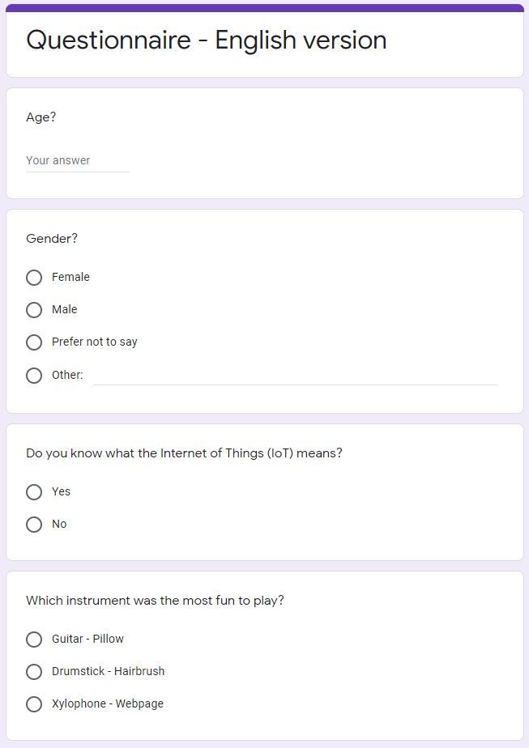

Robo Pop

Illustration by Connie Khan
Date - August to September 2018
Problem - Design installation aimed at making girls (age 12-16) interested in sensory technology and Internet of things.
Design - A robotic band controlled either a website or smart household items.
Role - Design Student
Responsibilities:
- Ideation and User research
- Physical Prototyping and Programming
Robo Pop - User Research
To get a better perspective on our main target group, teenage girls, we did go to school and did short interviews in the form of a questionnaire. It included questions about knowledge of Internet of Things, as well as habits around household items.
A secondary, but very important, user group that we had to consider were young children as our design needed to be durable enough to survive interaction with them. As such we followed a school class to the science centre and did observational studies such as the shadowing protocol.
Robo Pop - Prototyping
During this project we constructed real working physical prototypes that included all the functionality that an IoT band needed. Robotic arms, sensors and the ability to send message to a server were things I worked on.

This meant that we did a lot more coding during this project than I usually do, and as it was a very machine oriented project it meant that I had to learn Arduino during this course.
Robo Pop - Results

The prototype we created turned out great. It got lots of attention during the exhibition and was one of the more popular installations. And more information about it can be found at this website: http://idxpo.se/2018/robopop/
However, as successful as it was with the visitors of the science centre, we did not succeed to the extent that we wanted to in attracting our main target group. There were very few preteend and teenage girls at the science center during the exhibition and we succeeded a bit too well in attracting our secondary user group in young children.
All in all I am happy with the project, but it could benefit from another iteration to expand upon the ideas.